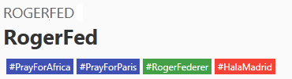
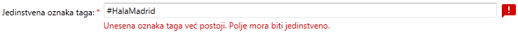
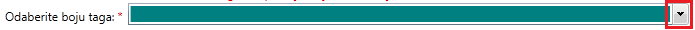
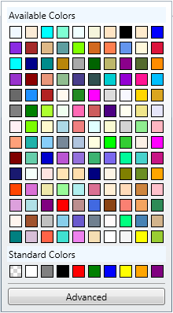

Sva polja koja su označena sa * su obavezna.
Softver Vam neće dozvoliti potvrdu unosa dok ne unesete sva obavezna polja.
Šta je tag?
Tag predstavlja etiketu koju vezujemo za manifestaciju. Pomoću njega lakše možemo identifikovati o čemu se radi u
manifestaciji. Za razliku od tipa (manifestacija može imati samo jedan), manifestacija može imati beskonačno tagova.
Na taj način možemo pobliže objasniti ulogu manifestacije.
Prilikom dodavanja ili izmjene taga, prikazan je trenutni izgled taga koji definišemo. Primjer je prikazan na slici 1.
Slika 1. Trenutni izgled taga koji definišemo
Tagovi se prikazuju unutar dijaloga za detaljan prikaz manifestacije. (Slika 2)

Slika 2. Prikaz tagova manifestacije
Oznaka taga
Oznaka taga mora da ima između 8 i 20 karaktera,
sadrži samo brojeve, cifre i znak '#' i
jedinstvena je.
Preporuka je da Vaše oznake započinjete znakom '#'.
Oznaka taga predstavlja jedinstvenu vrijednost za svaki tag.
U dijalogu Vam je dat jedan primjer ispravne oznake taga u okviru polja za unos npr. #HalaMadrid.
Svi neispravni unosi prikazani su kao na slici 3, a prelaskom kursora miša preko ikonice u tooltip-u će Vam
se prikazati informacije o formatu ispravnog unosa.

Slika 3. Format poruke korisniku kod neispravnog unosa oznake taga
Boja taga
Boja taga je obavezna.
Za svaki tag potrebno je odabrati boju. Tagovi se koriste u okviru manifestacija.
Boju birate na sljedeći način:
Kliknete na dugme označenog na slici 4.

Slika 4. Dugme za odabir boje taga
Nakon toga vam se prikazuje paleta iz koje možete odabrati boju.

Slika 5. Paleta odabir boje taga
Klikom na neku od prikazanih boja ste uspješno odabrali boju taga.
Opis manifestacije
Opis manifestacije je obavezan i
sadrži najviše 160 karaktera.
U ovom polju potrebno je napisati detaljan opis taga. Ograničen je na 160 karaktera, a greška se prikazuje
u formatu kao na slici 3.
 u tooltip-u će Vam
se prikazati informacije o formatu ispravnog unosa.
u tooltip-u će Vam
se prikazati informacije o formatu ispravnog unosa.